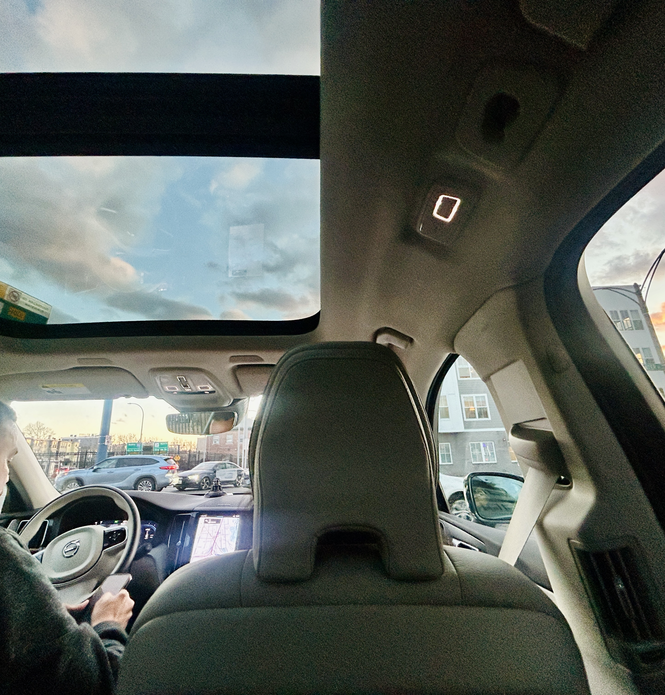
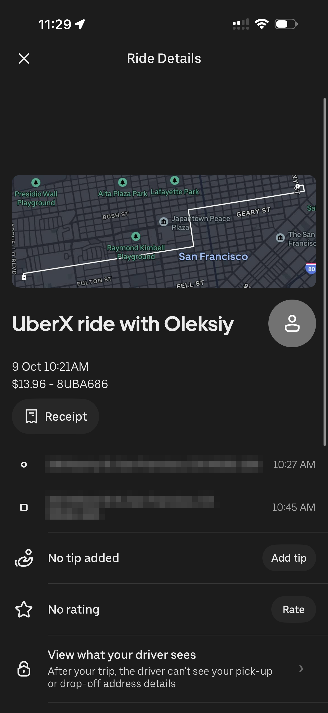
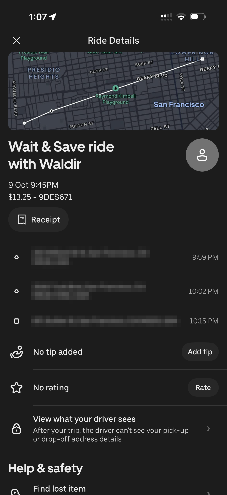
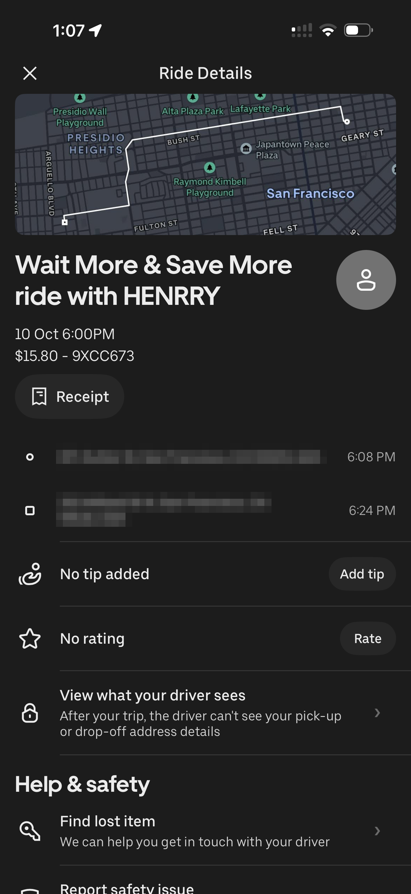

Review 1 of 3 · Friday, October 9 to Saturday, October 10, 2026Uber / Lyft
I say cab, but every receipt I have says Uber, so Uber it is. It’s the option I reach for first and trust least.
The rides
I took three rides in about a day and a half. Friday morning was a regular UberX from Kearny Street, by Haraz Coffee, back home: $13.96. Friday night was a Wait & Save ride: $13.25. Saturday evening was a Wait More & Save More ride: $15.80. That’s $43.01 for three trips, an average of $14.34 each. Two of those were the cheaper modes, the ones where the app asks you to be patient in exchange for a discount, and the discounted price was still over $13.
The receipts



The wait
Cost is the obvious problem, but time is sneakier. The rides themselves were short, 16 to 18 minutes each. The waiting was not. Comparing when I requested each ride to when the car showed up, I waited 6 minutes on Friday morning, 8 on Saturday evening, and 14 on Friday night. The 14-minute one was the Wait & Save ride, which makes sense, since waiting is the thing it’s selling. Add it up and a typical Uber took me about 26 minutes door to door.
The effort
Effort is where Uber wins, and I won’t pretend otherwise. I walk out, I get in, I get out where I’m going. There’s no schedule to check, no transfer, and no walk at the end. You’re paying about $14 to not have to think.
The regret
The regret comes from how it feels in the moment. $13.96 looks harmless on a screen. $13.25 looks harmless too. It was only when I lined up three receipts that the number looked like something. Uber never hits me with one big charge. It hits me with a medium one, over and over, and I keep tapping confirm.